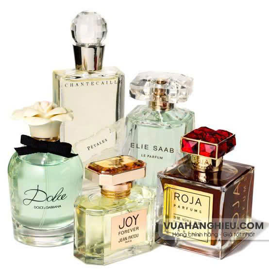
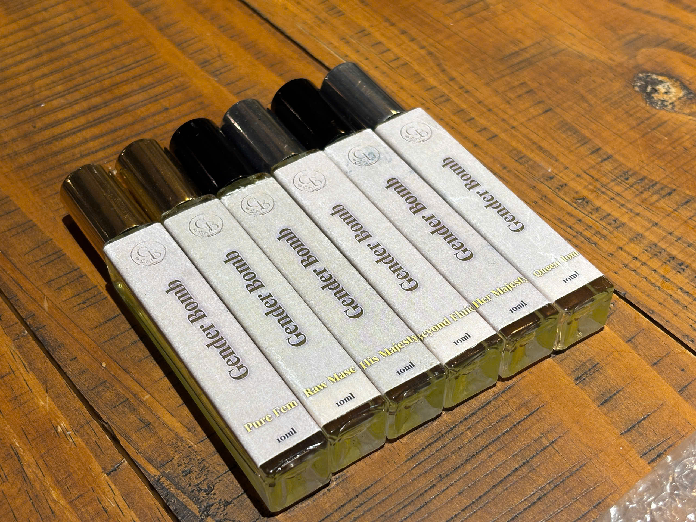
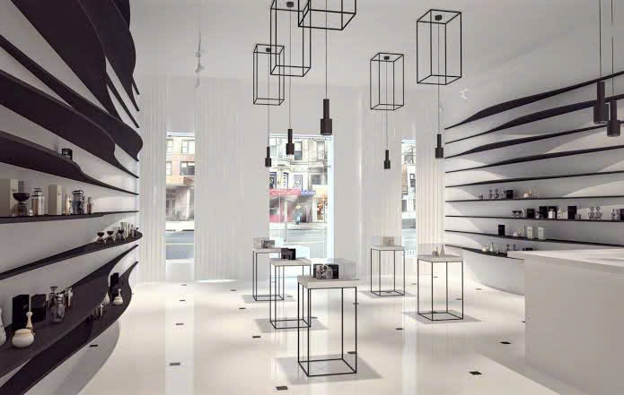
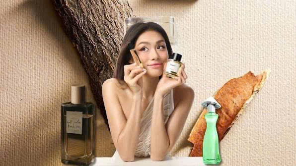

Hương thơm không còn là phụ kiện, mà là một phần của phong cách sống.
Năm 2026 đánh dấu sự thay đổi rõ rệt trong cách giới trẻ lựa chọn nước hoa. Nếu trước đây nước hoa chủ yếu được xem là món phụ kiện giúp tạo ấn tượng, thì ngày nay hương thơm đã trở thành một phần trong phong cách sống.
Thế hệ trẻ không còn lựa chọn nước hoa chỉ vì thương hiệu hay xu hướng. Họ tìm kiếm những mùi hương phản ánh cảm xúc, cá tính và giá trị sống.
Nước hoa phi giới tính tiếp tục dẫn đầu xu hướng
Một trong những xu hướng nổi bật nhất năm 2026 là sự lên ngôi của dòng nước hoa phi giới tính.
Giới trẻ ngày càng ít quan tâm đến những định nghĩa "For Men" hay "For Women". Thay vào đó, họ lựa chọn mùi hương dựa trên cảm xúc.

Những mùi hương phi giới tính ngày càng được yêu thích.
Hương thơm không còn bị giới hạn bởi giới tính mà được lựa chọn bằng cảm xúc.
Mùi hương mang dấu ấn cá nhân ngày càng được ưu tiên
Nhiều bạn trẻ mong muốn tìm thấy một hương thơm có thể kể câu chuyện riêng của mình thay vì những mùi hương phổ biến.
Những thương hiệu lấy cảm xúc làm trung tâm ngày càng nhận được sự quan tâm, trong đó Genderbomb được nhiều người chú ý nhờ triết lý độc bản từ cảm xúc.

Mỗi mùi hương đều đại diện cho một trạng thái cảm xúc khác nhau.
Những mùi hương tươi mát trở thành lựa chọn hàng ngày
Các nhóm hương cam bergamot, trà xanh, hương biển, hoa trắng và xạ hương sạch tiếp tục được yêu thích.
Đây là những mùi hương dễ sử dụng hằng ngày và phù hợp với nhiều phong cách.
Thiết kế tối giản nhưng giàu cá tính
Giới trẻ không chỉ quan tâm đến chất lượng mà còn chú trọng đến thiết kế. Những chai nước hoa nhỏ gọn, hiện đại và mang dấu ấn riêng ngày càng được ưa chuộng.

Thiết kế tối giản đang trở thành xu hướng trong ngành nước hoa.
Giá thành hợp lý, trải nghiệm vẫn trọn vẹn
Người trẻ ưu tiên các sản phẩm có giá thành dễ tiếp cận nhưng vẫn đảm bảo chất lượng, độ lưu hương và trải nghiệm sử dụng.
Vì sao xu hướng này ngày càng phổ biến?
- Thế hệ trẻ đề cao bản sắc cá nhân.
- Mạng xã hội thúc đẩy văn hóa yêu nước hoa.
- Nước hoa trở thành một phần của lifestyle.
- Cảm xúc được đặt lên hàng đầu khi lựa chọn mùi hương.

Nước hoa đang trở thành một phần trong phong cách sống của giới trẻ.
Xu hướng nào sẽ tiếp tục dẫn đầu?
Các chuyên gia dự đoán những dòng nước hoa cá nhân hóa, phi giới tính và lấy cảm xúc làm trung tâm sẽ tiếp tục phát triển mạnh.
Người tiêu dùng sẽ không chỉ tìm kiếm một mùi hương để "thơm" mà còn tìm kiếm cảm giác tự tin và sự đồng điệu với chính mình.
Xu hướng có thể thay đổi theo thời gian, nhưng cá tính luôn xứng đáng được tỏa hương theo cách riêng.
Và đó cũng chính là tinh thần mà Genderbomb mong muốn truyền tải: mỗi người đều có một bản sắc riêng và mỗi mùi hương đều là một cách để kể câu chuyện ấy.